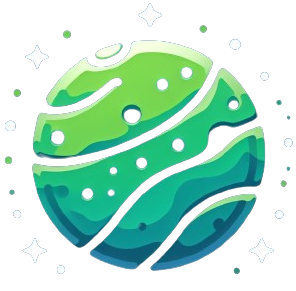

Qui suis-je ?
Je m'appelle Alexis Chabanne, étudiant en BUT 3 Informatique, actuellement en échange universitaire à l'UQAC dans le cadre d’une bi-diplomation. Passionné par l’informatique et le sport, je cherche à allier ces deux domaines à travers mes projets. Ce que j'ai trouvé en étant athlète universitaire. Depuis mon enfance, je pratique le football et depuis deux ans la course à pied, et je suis aujourd’hui athlète universitaire au Québec. Ces expériences m’ont appris la discipline, la persévérance et l’esprit d’équipe, des valeurs essentielles aussi bien dans le sport que dans l’informatique.
Mes Compétences
Java
Niveau : AvancéJava est un langage de programmation populaire, principalement utilisé pour le développement d'applications backend, mais aussi pour les applications mobiles (Android) et les applications de bureau. Il est connu pour sa portabilité, sa sécurité et sa robustesse. Java est également largement utilisé dans les systèmes embarqués, les jeux vidéo, et les applications financières.
Documentation JavaPostgreSQL
Niveau : AvancéPostgreSQL est un système de gestion de base de données relationnelles open source et puissant. Connu pour sa conformité aux normes SQL, sa fiabilité et ses fonctionnalités avancées telles que le support des transactions, la réplication et la gestion des contraintes, PostgreSQL est utilisé dans de nombreux environnements professionnels et critiques.
Documentation PostgreSQLPython
Niveau : AvancéPython est un langage de programmation polyvalent, réputé pour sa simplicité et sa lisibilité. Il est utilisé dans divers domaines tels que le développement web, l'analyse de données, l'intelligence artificielle, l'automatisation des tâches, et plus encore. Python encourage une syntaxe claire et concise, ce qui en fait un choix populaire parmi les développeurs débutants et expérimentés.
Documentation Python
PHP
Niveau : AvancéPHP (Hypertext Preprocessor) est un langage de script côté serveur largement utilisé pour le développement web. Il est principalement utilisé pour générer des pages web dynamiques, traiter des formulaires, gérer des sessions utilisateur, interagir avec des bases de données et bien plus encore.
Documentation PHPJSON
Niveau : IntermédiareJSON (JavaScript Object Notation) est un format léger d'échange de données, facile à lire et à écrire pour les humains, ainsi qu'à interpréter et à générer pour les machines. Il est basé sur un sous-ensemble du langage de programmation JavaScript, mais est indépendant de tout langage. JSON est largement utilisé dans les applications web pour le transfert et le stockage de données.
Documentation JSONGit
Niveau : AvancéGit est un système de contrôle de version distribué utilisé pour suivre les modifications dans les fichiers de code source pendant le développement logiciel. Il permet aux développeurs de travailler simultanément sur un même projet, de fusionner des modifications, de gérer des branches et de suivre l'évolution du code.
Documentation GitProjets
Outil de validation de versions
Catégorie : Projet professionnelDéveloppement et mise en place d’un outil permettant la validation des versions logicielles du frontal pour imprimantes numériques.

J'ai éffectué un stage au sein de Tech Research, une entreprise spécialisée dans les solutions pour imprimantes numériques. L'objectif principal de mon stage était de développer et de mettre en place un outil permettant la validation des versions logicielles du frontal pour ces imprimantes. Ce projet visait à automatiser et simplifier les tests existants tout en intégrant de nouveaux tests plus poussés, le tout accompagné d'une interface utilisateur facilitant l'utilisation de ces tests. Le travail accompli durant ce stage a permis de réécrire les tests existants en PowerShell* et de développer de nouveaux tests avancés en Python*. Une interface utilisateur a été conçue pour améliorer l'accessibilité et l'efficacité des tests. Ce nouvel outil permet de créer, gérer et exécuter des suites de tests à intervalles réguliers, facilitant ainsi la validation des nouvelles versions logicielles des imprimantes numériques.
Wiki de sport
Catégorie : Projet personelCe projet personnel est un site web sportif multifonctionnel combinant un site informatif type Wikipédia, un réseau social et un suivi en direct des résultats sportifs. Codé en PHP, HTML, CSS, et JavaScript, il permet aux passionnés de sport de se retrouver et d'échanger autour de leur passion.

Ce projet est une initiative personnelle visant à créer un site web sportif multifonctionnel. Il combine les caractéristiques d'un site informatif type Wikipédia, d'un réseau social, et d'un site de suivi en direct des résultats sportifs. Codé en PHP, HTML, CSS, et JavaScript, il permet aux passionnés de sport de se retrouver, partager, et échanger autour de leur passion. Le site comporte plusieurs pages dédiées : une page d'histoire et d'événements sportifs, un palmarès, des actualités, des résultats en direct, des forums de discussion, des profils utilisateurs, et une section sur les compétitions à venir, incluant les compétitions amateurs. La complexité du projet réside dans la gestion des bases de données SQL, ce qui prolonge sa réalisation sur plusieurs années.
Jeux ludo éducatif
Catégorie : Projet universitaireTerraForma est un jeu éducatif immersif pour les élèves de 3ème, leur permettant de terraformer une planète tout en renforçant leurs connaissances en SVT à travers des quiz et des mini-jeux. Le projet se distingue par son approche semi-agile, sa gestion rigoureuse des risques et sa conception centrée sur la sécurité des données.
Le projet TerraForma ambitionne de transformer l'enseignement des SVT pour les élèves de troisième en un voyage éducatif interactif et motivant. En jouant le rôle d'astronautes, les élèves collaborent pour terraformer une planète à travers des quiz et des mini-jeux, intégrant ainsi l'apprentissage curriculaire avec des éléments ludiques et collaboratifs. Ce jeu immersif encourage non seulement l'apprentissage des sciences, mais aussi le développement de compétences sociales et de résolution de problèmes chez les élèves.
Mon Cursus / CV
Formation
-
Baccalauréat infomatique - UQAC, Chicoutimi
Depuis août 2024
Parcours développement d’applications -
BUT Informatique - IUT2, département informatique, UGA Grenoble
Depuis août 2022
Parcours développement d’applications -
Diplôme du Baccalauréat - Lycée Polyvalent Marlioz, Aix-Les-Bains
De septembre 2019 à juin 2022
Mention très bien, spécialité : Mathématiques / Numérique et sciences informatiques
Expériences Professionnelles
-
Sport Expert, Chicoutimi - Job étudiant
Septembre 2024 -
Conseiller chaussures -
Tech Research Tagg Informatique, ALbens - Stage
Avril 2024 - Juin 2024
Stage de fin d'année en développement -
E.Leclerc, Drumettaz-Clarafond - CDD étudiants
Juillet 2022 - Août 2022 / Juillet 2023 - Août 2023
Mise en Rayon
Loisirs
- Course à pied (marathon, trail, athlétisme)
- Football
- Ski
- Triathlon
- Cyclisme